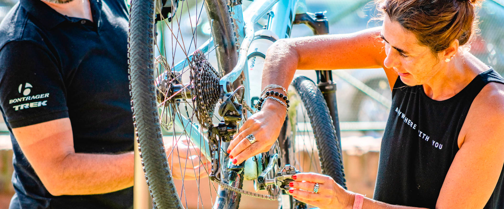
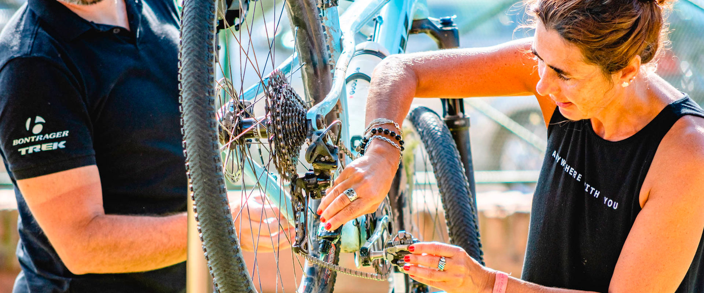

Es Gratis!
Sólo necesitas una bici (no importa
la marca) y tu casco!.Si vas a venir por primera vez, te recomendamos chequear el estado de la
bici
en
tu bicicletería habitual.
Día y Horario
Nos encontramos todos los sábados y
el horario normalmente es por la mañana a las 10 am pero puede variar durante el año
en las distintas sedes por cuestiones climaticas (mucho calo o frío) por lo que te
pedimos te informes con tu sede o nos contactes al formulario al pie de la web.
Qué Llevar?
Ropa cómoda, ideal si tenes calza
ciclista.
Zapatillas de bici o deportivas
Lentes de sol son muy útiles también
Te recomendamos llevar una caramañola o botella con medio litro de agua
El resto de equipo lo vas a ir adoptando a medida que progreses, no te
preocupes!
Principiante
Chicas en bici es un grupo creado para
dar los primeros pasos en ciclismo, aprender y divertirse haciendo amigas y viviendo
lindas experiencias.
No tenes que tener un nivel de entrenamiento previo, pero calcula que vamos a
andar aproximadamente 1 hora en bici a ritmo tranquilo.
Si te entusiasma la idea de entrenar y andar más en bici también vas a poder
sumarte a salidas más exigentes y algún día participar de carreras, pero esto lo
decidirás vos!
 
